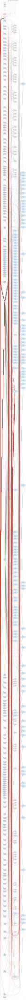
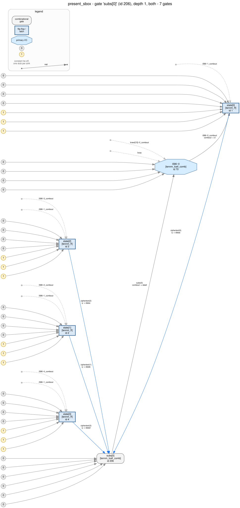
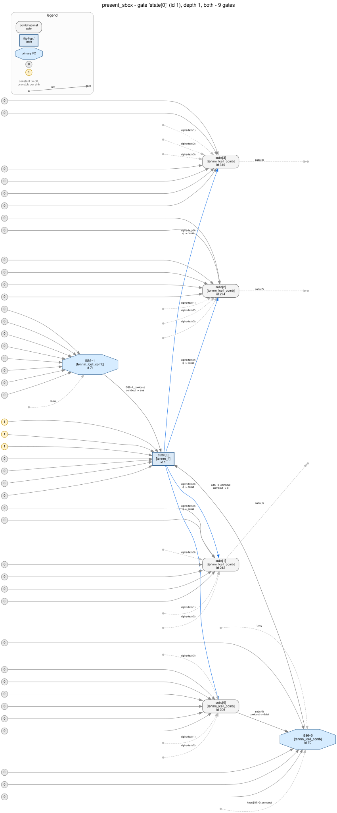

Walkthrough 12 — a PRESENT-80 encryption datapath: reading a published S-box, a bit permutation and a key schedule straight out of the silicon.
The rule this page follows: every
number, every quoted output and every picture below was produced by the command
printed above it, and
check.py re-derives all of them from the
committed netlists and fails if any has drifted. Where a tool found nothing, that
is shown too, with the reason — one whole layer of this cipher is invisible to the
pass that was built to find it.
Sixteen four-input LUT cones over the datapath register
enumerate to the same 16-entry bijection, C56B90AD3EF84712, which is
the PRESENT S-box; a seventeenth sits on the key register. The wiring from those
cones to the flip-flops is the PRESENT bit permutation, all 64 positions. The key
register is a rotation by 61 with a substituted top nibble and a counter XORed
into bits 19:15. A 5-bit counter runs 1..31. Driven with the four published
PRESENT-80 test vectors, the netlist returns the four published ciphertexts.
The same flow as every other walkthrough in this series. Quartus Prime Pro 26.1, Agilex 3, synthesis only — no fitting, so what you get is the synthesized snapshot the EDA netlist writer emits for simulation:
$ cd quartus && quartus_sh -t build.tcl
$ quartus_syn present_sbox -c present_sbox
$ quartus_eda --simulation --format=verilog --tool=questasim \
--output_directory=simulation present_sbox -c present_sboxThat writes present_sbox.vo. Before
anything is read out of it, ask whether it is even readable — whether every
primitive in it is one whose behaviour this fork has validated against the vendor:
$ python3 tools/hal_agilex --strict inventory present_sbox.vo \
-o artifacts/inventory.findings.json
$ echo $?
0Exit 0 with --strict means no instance is out of coverage: the
export is 377 instances, 226 tennm_lcell_comb and 151
tennm_ff, and every one of them is in a pin configuration
tools/hal_agilex models. No RAM, no DSP, no PLL, no IO buffers. The
same file rewritten for HAL's Verilog parser is
netlist.hal.v:
$ python3 tools/hal_agilex import present_sbox.vo -o netlist.hal.vThis export keeps the RTL's names: state,
kreg, subs, plaintext. A real target does
not, and none of the recovery below uses them — analysis.py finds the
substitution layer by enumerating cones, and identifies which register bank is the
datapath by which bank the substitution cones read, not by what it is
called. The names are convenient for reading this page. Walkthrough 16 takes them
away.
Three questions, in the order the method asks them: how much is there, what crosses the boundary, and where is the state.
$ python3 analysis.py
netlist: present_sbox.vo
377 instances: tennm_ff x151, tennm_lcell_comb x226
inputs ['start', 'plaintext', 'key_in', 'clk', 'rst_n'] / outputs ['ciphertext', 'busy', 'done']
register banks (clock, clear, enable):
148 flip-flops clk=clk clrn=rst_n ena=i586~1_combout
3 flip-flops clk=clk clrn=rst_n ena=const1There is no hierarchy to speak of — hal_viz module_tree
(images/module_tree.svg) draws one module
holding all 379 gates, which is what a flat post-synthesis export always looks
like. Whatever structure this design has is in the wiring, not in the modules.
151 flip-flops is a hard upper bound on the state, and it is a lot for this series — three times walkthrough 01's counter. 144 bits of payload plus a handful of control is the shape of a block cipher with a key register, and the input widths (64 and 80) say the same thing before any logic is read. Nothing here proves that; it is where to point the next tool.
The control-pin signature splits the flops two ways and no further: one clock, one asynchronous active-low clear, and exactly two enable groups — 148 flops that move together under one enable net, and 3 that are always enabled. Whatever this design does, it does it to 148 bits at once, every cycle it is running. The three always-on flops are the part that decides whether it is running.
One enable over 148 flops rules out a pipeline: a pipelined cipher has one enable per stage, or none at all. An iterative round-per-cycle datapath is exactly one wide enable plus a small always-on sequencer. This is the first evidence for “one round per clock”, and it came from four pin connections per flop.
Nodes are gates, edges are nets — one edge per driver → sink
pair, from the output pin that drives a net to each input pin that reads it. That
is all a netlist is. It is not acyclic: the datapath register feeds itself. But in
a synchronous design every cycle passes through a register, so if you cut
every edge that lands on a flip-flop pin, the cycles vanish and what is left is a
directed acyclic graph — the combinational core. Level 0 is everything with no
remaining predecessor; level n is everything whose deepest predecessor is
at level n−1. hal_viz dag runs Kahn's algorithm and
draws each level as a column.
$ python tools/hal_viz dag netlist.hal.v --gate-library "$GL" \
--const-hub -o images/dag.svg --html
3 topological levels, 601 edges
cut at a register. The standalone page with a legend and these counts is
images/dag.html; the DOT source is
images/dag.dot. 379 rather than 377 because HAL adds
a HAL_GND and a HAL_VCC gate on load. Unlike the other
walkthroughs in this series this drawing uses --const-hub: the same
command without it emits one stub per consuming pin — 2292 extra nodes and a
2.5× larger SVG, measured, though that drawing is not committed — which at
this size buys nothing.Read the column widths, not the picture:
Three levels over 226 combinational cells is the whole point. Compare the rest of the series: walkthrough 01's 24-bit counter is 24 levels over 23 cells — a ripple, one cell per level, each waiting for the one before it. Walkthrough 06's ALU is 12 levels over a ten-cell carry chain. Those are deep and narrow: arithmetic, where bit i cannot start until bit i−1 finishes.
This one is shallow and wide: 226 cells in two ranks, 153 of them independent of each other. That is the substitution-permutation shape. An SPN round is by construction sixteen small functions that do not talk to each other, followed by wiring; there is no carry to propagate, so there is nothing to make it deep. If you only ever look at one picture of an unknown cipher core, look at this one: a wide, two-rank combinational core between two register banks says “parallel S-boxes” before a single truth table has been enumerated.
Structure is half of it. The other half is what the values do, and the two committed artifacts above — the SVG and its DOT source — are already enough to join a simulation to the drawing:
$ python3 tools/hal_agilex trace present_sbox.vo \
--reference recovered_reference.py --cycles 34 \
--hold start=1 --hold plaintext=0 --hold key_in=0 \
-o artifacts/dag_trace.json
$ python3 tools/hal_viz clock_step images/dag.svg \
--trace artifacts/dag_trace.json -o images/dag_interactive.html
[hal_viz] bound 377/379 gate(s) and 967/1495 edge(s); 0 tie-off(s), 0 ambiguous edge(s)images/dag_interactive.html
is that page: prev/next, a scrubber, play/pause, and every net coloured by its
value. The window is deliberate — start held high with plaintext and
key held at zero is the first published test vector, so the 34 cycles are
the clear, the load, all 31 rounds and the stop, ending with
5579C1387B228445 in the register and done high. Step
through it and the round structure is visible as motion: one rank of cells
changing, then the next, then the whole register at once.
The two gates it cannot colour are HAL_GND and
HAL_VCC, which exist only inside HAL and have no net in the export;
the 528 uncoloured edges are their fan-out, drawn as a hub here rather than as
per-pin stubs. The page counts both rather than guessing a value for them.
It cannot tell you what any cell computes.
lut_mask is a node attribute, not a shape. The drawing says
“sixteen-ish independent 4-input cones”; it does not say
C56B90AD3EF84712. As in walkthrough 10: the picture localises, the
algebra decides.
An S-box in a netlist is not a component; it is a coincidence between cones.
n combinational nets that read the same n sources, and that taken
together permute them, is what a substitution box looks like after synthesis, and
hal_crypto's S-box pass is that sentence turned into a search: group
the combinational nets by the set of registers and primary inputs their cone
depends on, keep the groups where the number of outputs equals the number of
sources, enumerate the map, and keep it if it is bijective (a
colliding map is not a substitution) and not affine over GF(2) (a
linear map is a permutation network or a key XOR, and both have their own pass).
$ python3 -m hal_crypto sbox present_sbox.vo -o artifacts/sbox.findings.jsonEvery hal_crypto command writes a
findings document and prints
only the path; the blocks below are the title and
summary fields out of that JSON, which is also what
hal_viz report renders into
artifacts/findings_report.html.
Seventeen groups survive. Sixteen of them read four bits each of the same 64-flop bank; the seventeenth reads four bits of the 80-flop bank. Every one of them enumerates to the same table:
x 0 1 2 3 4 5 6 7 8 9 A B C D E F
S(x) C 5 6 B 9 0 A D 3 E F 8 4 7 1 2 algebraic degree 3, differential uniformity 4and every one of them matches the same library entry:
A 4-bit substitution equal to present (exact match)
The 4 output cones over state[0], state[1], state[2], state[3] were enumerated
over all 16 input assignments; the resulting bijection equals present under the
'exact' equivalence. Table equality is a fact about the extracted function -- it
does not by itself make the design that cipher.Sixteen of the seventeen match at the exact tier and one at the bit_permutation tier. The odd one out is worth a paragraph, because the reason is not cryptographic at all:
A 4-bit substitution equal to present (bit_permutation match)
The 4 output cones over state[10], state[11], state[8], state[9] ...Four output signals have no intrinsic bit order — the pass has to pick one, and
it sorts by net name. For fifteen nibbles the name order and the numeric order
agree. For the nibble on state[8..11] they do not:
“state[10]”, “state[11]”, “state[8]”,
“state[9]” is the string order, which rotates the nibble by two
positions on both the input and the output side. The extracted table is therefore a
bit-permuted PRESENT S-box, and hal_crypto says
bit_permutation rather than exact, which is the honest
report: the table it built really is not equal to the published one.
Two lessons. The tier is a statement about the
extraction's own conventions as much as about the circuit, so a
bit-permutation match on a 4-bit box is normally as good as an exact one. And the
tier is never inflated — nothing in this pipeline reports a permuted match as
exact, which is exactly what makes the sixteen exact matches worth
something.
Here is one of the sixteen, as a picture and as a cell. The picture is one substitution output and everything within one hop of it:
$ python tools/hal_viz netlist_graph netlist.hal.v --gate-library "$GL" \
--gate 'subs[0]' --depth 1 --show-boundary --pin-labels -o images/sbox_cone.svg
And the cell itself, straight out of the .vo:
tennm_lcell_comb #(
.extended_lut ("off"),
.lut_mask (64'h59A659A659A659A6),
.shared_arith ("off"))
\subs[0] (
// Equation(s):
// subs[0] = LCELL(!state[0] ^ (!state[3] ^ (((!state[1] & state[2])))) )
.dataa(~state[0]), .datab(~state[1]), .datac(~state[2]), .datad(~state[3]),
...
.combout(subs[0]));The mask repeats every 16 bits because only four of the ALM's six data inputs are live; the pass folds the constant pins away before it enumerates. Nothing about “S-box” is written anywhere in the cell — the algebra is the only thing that says it.
Turn it around and the other direction is the picture of the whole nibble: one datapath flip-flop and everything one hop from it.
$ python tools/hal_viz netlist_graph netlist.hal.v --gate-library "$GL" \
--gate 'state[0]' --depth 1 --show-boundary --pin-labels -o images/netlist_graph.svg
state[0] drives exactly four combinational
cells — subs[0..3], the four output bits of its own nibble — and is
driven by one cell (its D) plus the enable. A datapath bit that fans out to
exactly the other three bits of its own group and nowhere else is the
S-box boundary, visible before any function is read.Both drawings above are scoped with
--gate ... --depth 1. There is no whole-netlist
netlist_graph in this walkthrough: Graphviz's dot did not
finish the unscoped 379-gate drawing in 600 seconds, and
--depth 2 around any datapath flop already pulls in all 379 gates, so
that is not a close-up either. --engine sfdp --const-hub does render
it, in about four minutes, and the result is an unreadable ball of wool. The
levelled DAG in section 3 is the whole-design picture that survives this size; that
is what it is for.
PRESENT's other layer is a bit permutation, and hal_crypto has a
pass for exactly that. Run it:
$ python3 -m hal_crypto permutation present_sbox.vo -o artifacts/permutation.findings.json
No non-identity bit permutation layer
Every pure-wire map between two equally wide vectors is the identity, so there is
no permutation layer to compare against the published pLayers.Nothing. The pass is not broken and the permutation is not absent — the two statements are compatible, and understanding why is worth more than the result would have been.
A permutation layer costs no logic. That is what makes it cheap in silicon and what makes it hard to see: after synthesis it is not a signal, it is which cell output is soldered to which flip-flop input. The pass looks for the one shape where a permutation does leave a trace — a declared vector, or a register bank's D pins, whose bits each peel back through nothing but buffers and inverters to distinct bits of one other vector. In this netlist the D pins of the datapath register are driven by ALMs (the round key XOR sits between the substitution and the register), so the peel stops immediately and the pass correctly reports that it has nothing to compare.
This is a real coverage gap in the tool, and it is
reported as such rather than worked around: hal_crypto permutation
finds rotations between register banks (walkthrough 11's ARX shifts) but will
not find a pLayer that lands behind any logic. Anyone identifying an SPN
should expect to do this step by hand.
By hand does not mean by eye. The question is: for each of the 64 datapath
flip-flops, which substitution output drives it? Answer it functionally, in two
steps, both in analysis.py:
permutation layer over register bank 'state' (64 bits): complete
equals the published PRESENT pLayer: TrueAll 64 entries, and the map is P(i) = 16i mod 63 for
i < 63 with P(63) = 63 — the PRESENT pLayer, in the
convention where bit i of the substitution output drives state bit
P(i). The 64 positions are in
artifacts/analysis.json.
Step 1 is unconditional: it is a statement about functions, and it would hold if the S-box were something nobody has ever published. Step 2 is conditional on the S-box match — it uses the published table as the labelling that gives the four outputs a bit order. Without a match in hand the honest result would be “the permutation, up to a relabelling inside each nibble”, which is still enough to see the shape (each nibble's four outputs land on four positions 16 apart, one in each quarter of the state) but not enough to compare to a published table position by position. That dependency is why this section comes after section 4 and not before it.
The seventeenth substitution group reads kreg[15..18] — four bits of
the 80-flop bank, not the 64-flop one. A key schedule with an S-box in it is a
strong hint on its own; the rest of the schedule falls out of the same kind of
question asked of every flop in that bank: which registers does my D cone
read?
key schedule over register bank 'kreg' (80 bits):
71 bits are a plain rotation, left by 61
substituted bits [76, 77, 78, 79], counter injected into bits [15, 16, 17, 18, 19]71 + 4 + 5 = 80, with nothing unclassified. That is the PRESENT-80 key schedule exactly: rotate the register left by 61, put the top nibble through the S-box, XOR the round counter into bits 19:15, and use the top 64 bits as the round key.
A rotation by 61 across 80 flops is a shift
structure, and hal_crypto lfsr reports nothing here: it walks
register-to-register links through buffers and inverters only, and in this netlist
every key flop's D goes through the load multiplexer that selects between
key_in and the rotated value. One 3-input cell per bit is enough to
hide an 80-bit rotation from a pass that requires pure wiring. Reading the
cone sources instead of the wire, as above, sees straight through it — the
mux does not change which register the bit comes from.
The three always-enabled flops and the four counter flops in the wide bank are
the sequencer. Rather than reason about them, drive the netlist: load a block, then
clock until it stops, watching the counter and the busy output.
rounds: busy for 31 cycles, counter 1..31, monotone TrueOne load edge, then 31 enabled clocks, the counter stepping 1, 2, 3, … 31 and the design stopping the cycle after it reaches 31. 31 rounds, measured on the netlist, not inferred from the counter's width — 5 bits would allow 32, and the design uses 31 of them. That is one of the small, checkable numbers that separate PRESENT from a design that merely looks like it.
$ python3 -m hal_crypto identify present_sbox.vo -o artifacts/identify.findings.json
Structural family: spn (confidence: high)
The six passes agree on 'spn'. Families with evidence: spn.
17 bijective non-affine substitution(s) extracted from LUT cones,
17 of them matching the built-in library.
Classical / PQC style: classical-style (confidence: high)
The structures found (spn) are the ones classical symmetric primitives are built
from, and no lattice/ring arithmetic was found. This does NOT rule out
post-quantum cryptography: a hash-based or code-based scheme contains neither
NTTs nor S-boxes and would come back none-detected here.Read the words carefully, because each one is narrower than it looks:
| the tool says | which means | and does not mean |
|---|---|---|
family: spn |
substitution boxes were extracted from LUT cones, more than one of them | that the design is a block cipher; a substitution layer is a component, not an algorithm |
equal to present (exact) |
the sixteen numbers this cone group computes are the sixteen numbers in the paper | that this is PRESENT; PRESENT's S-box also appears in other designs, and so do S-boxes bit-permutation-equivalent to it |
classical-style |
the structures found are the ones classical symmetric primitives use | that the design is not post-quantum; hash- and code-based schemes have no S-boxes and land in none-detected |
confidence: high |
no pass hit a coverage limit — no cone was too wide to enumerate | a probability; it is a statement about the search, not about the world |
What lifts this from “an SPN with PRESENT's S-box” to “PRESENT-80” is the accumulation: the S-box and the pLayer and the 80-bit key register and rotation-61-with-a-substituted-nibble and a counter into bits 19:15 and 31 rounds. Any one of them could be coincidence. Together they are a specification. And the next section makes even that unnecessary.
PRESENT ships four test vectors. Feed them to the netlist — load plaintext and key, drop the input ports back to zero so nothing can leak through them, clock 31 times, read the register:
published PRESENT-80 test vectors:
0000000000000000 / 00000000000000000000 -> 5579C1387B228445 agrees
0000000000000000 / FFFFFFFFFFFFFFFFFFFF -> E72C46C0F5945049 agrees
FFFFFFFFFFFFFFFF / 00000000000000000000 -> A112FFC72F68417B agrees
FFFFFFFFFFFFFFFF / FFFFFFFFFFFFFFFFFFFF -> 3333DCD3213210D2 agreesThis is the strongest single piece of evidence on the page and it is worth being clear about why: it does not depend on the S-box match, the permutation recovery or the key-schedule classification. It is four 64-bit words out of a simulator of the primitives, against four 64-bit words out of a 2007 paper. If every structural step above had been wrong, this would still be right.
recovered.v is the RTL written back from
those findings, and recovered_reference.py
is the same reconstruction as a Python model.
hal_agilex behavior simulates the export against it, cycle by cycle,
with pseudo-random inputs and two asynchronous clears:
$ python3 tools/hal_agilex behavior present_sbox.vo \
--reference recovered_reference.py --cycles 600 \
-o artifacts/behavior.findings.json
600 pseudo-random cycles, including asynchronous clears, agree with the reference
model. Nothing is claimed beyond that bound.A cycle count is not a justification; what the window
contains is. Replaying the same stimulus against the model
(check.py does this and asserts the number) gives
16 complete 31-round encryptions with random key and plaintext, 558
of the 600 cycles busy, and two asynchronous clears fired mid-encryption at cycles
200 and 400. The bound covers the whole state machine — load, all 31 rounds, the
stop, and being reset in the middle of a round — sixteen times over, with a
different key each time.
A passing bounded check proves nothing until you know what a failing one takes.
Both controls below are one-line edits of the reconstruction, produced by
sed in run_analysis.sh:
| control | the edit | result |
|---|---|---|
| one substitution entry | S[0xA]: F → E |
caught at cycle 6 — five rounds into the first encryption, the first time any of the sixteen nibbles takes the value A |
| one round short | ROUNDS = 31 → 30 |
caught at cycle 35, and on busy/done, not on the data: the model has finished while the netlist still has a round to run |
Note what the second one shows. At the moment of the mismatch the two
ciphertext words are still equal; only the control outputs
differ. A reference model that exposed only the data bus would have caught this one
cycle later, and a model with no busy output at all might not have
caught it inside the window. Which outputs a reference declares is part of how
strong its bound is.
Everything above rests on the substitution layer being visible — on those sixteen cones existing as cones. That is not a property of PRESENT. It is a property of two lines of the RTL, and variants/ holds the proof: the same cipher, the same device, the same flow, synthesized twice more.
| export | what changed | gates | identify |
|---|---|---|---|
present_sbox.vo |
— | 377 | spn, 17 substitutions, 17 library matches |
variants/present_nokeep.vo |
the two /* synthesis keep */ pragmas deleted, nothing else |
373 | spn, 13 substitutions, 0 library matches |
variants/present_textbook.vo |
the register holds the state before the round key is added (design_textbook.v) | 441 | none-detected |
keep: the boxes are there and unrecognisableA 4-input S-box output plus one round-key bit is five inputs, and an ALM has six, so the synthesiser folds the XOR into the same cell — for free. What is left is still thirteen bijective non-affine 4-bit cone groups, degree 3, differential uniformity 4, the same fingerprint as before. Not one of them matches anything:
A 4-bit bijective non-affine substitution with no library match
4 cones over state[16], state[17], state[18], state[19] form a bijection of degree 3
that matches no entry of the built-in library at any tier.
table: 0 9 5 E A 3 6 8 F 4 C 2 1 D B 7That table is the PRESENT S-box with a piece of its neighbourhood composed into
it, and it is not equal to PRESENT at the exact,
xor_constant or bit_permutation tier — the pass says so
rather than declaring a near-miss. This is the tool refusing to force a fit, and it
is the behaviour you want: on a real target the difference between “the
PRESENT S-box” and “a degree-3 4-bit bijection that is not in the
library” is the difference between an identification and a lead.
Move the register to the other side of the key addition — the placement every
description of PRESENT uses, state <= pLayer(sBoxLayer(state ^ K))
— and each substitution cone reaches back through the XOR to eight
sources, four state bits and four key bits. Four output cones over eight sources is
not an n-to-n shape; the grouping step never forms a candidate,
and the S-box pass has nothing to enumerate. The whole datapath disappears from the
verdict:
Structural family: none-detected
The six passes agree on 'none-detected'. Families with evidence: none.Only one 4-bit bijection is left anywhere in that export — on the key register, where the schedule's S-box happens to read four registers directly — and it does not match the library either, for the same folding reason. The design is bit-for-bit the same cipher; its ciphertexts are the same; and a structural identifier sees nothing.
Structural crypto identification is a search for shapes that survived
synthesis. Whether the shape survives is decided by the RTL and the synthesiser, not
by the algorithm. A negative result from identify is a statement about
the netlist in front of you, never about the design that produced it.
So this walkthrough's target is a cipher core written to be readable, and it says so. The two exports above are what the same cipher looks like when it is not. If you are identifying a real target and the S-box pass comes back empty, the next move is not another recognizer — it is the general method: cut at the register boundary, enumerate cones over the sources they actually have, and look for an n-to-n bijection modulo a key XOR you will have to factor out yourself.
inventory --strict, exit 0).exact tier, 1 up to a bit
permutation.classical-style excludes post-quantum. It
excludes lattice/ring arithmetic being found, nothing more.Every command on this page, in order, is
run_analysis.sh. In a container with a
built HAL and Graphviz:
HAL_BASE_PATH=/work/build HAL_PY_PATH=/work/build/lib PYTHONPATH=/work/build/lib \
bash examples/agilex3_walkthroughs/12_present_sbox/run_analysis.shOnly the two pictures need HAL. The recovery, the identification, the test
vectors, the behaviour bound and the negative controls are pure standard library —
tools/hal_agilex and tools/hal_crypto — so the assertions
run anywhere:
$ python3 examples/agilex3_walkthroughs/12_present_sbox/check.py
...
all 68 checks passedRe-synthesizing needs Quartus Prime Pro 26.1 and an Agilex 3 licence; the
project is in quartus/ and the exact commands
are in section 1. The two counterfactual exports are regenerated the same way from
variants/, which documents the one-line
difference in each.
Walkthrough 12 of the Agilex 3 series · series index
{kind=link}